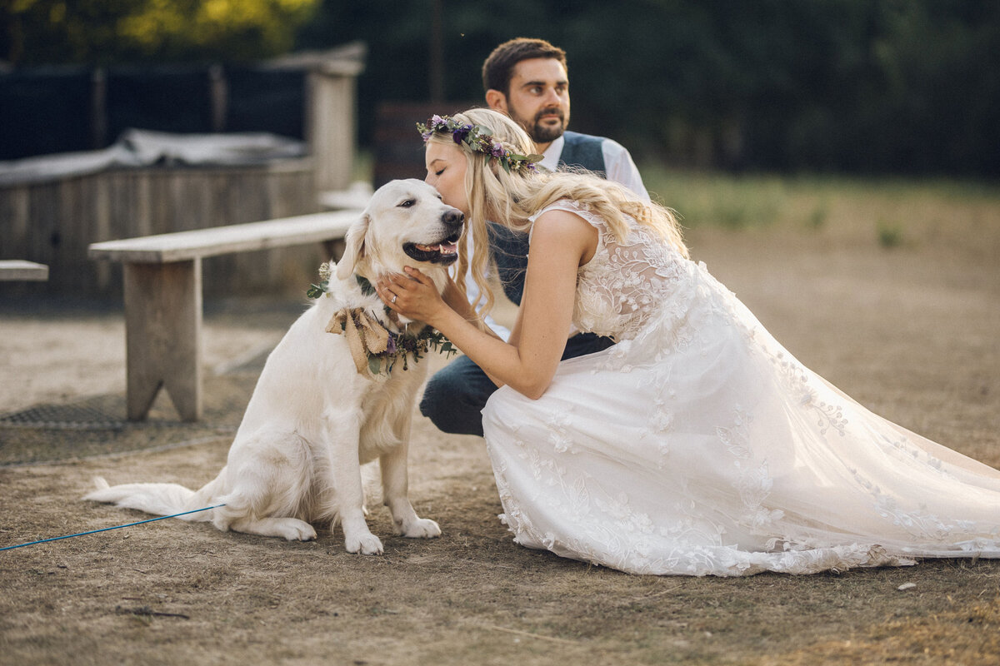

I'm the founder and lead videographer at Storyboard Wedding Videos. I've been filming weddings since 2018, and every single one reminds me why I fell in love with this job in the first place.
I believe the best wedding films are the ones that feel real. Not forced, not staged — just genuine moments of joy, love, and the odd happy tear. My approach is simple: blend in, keep things relaxed, and let your day unfold naturally in front of the camera.
When I'm not filming weddings, you'll probably find me walking my dog, watching football, or editing late at night with a cup of tea.
A little taste of what we do
We keep things relaxed and informal. You won't find us asking you to pose or re-do your vows for the camera. We believe the most beautiful moments are the ones that happen when you forget we're there.
We film with high-quality equipment, but we keep our setup small and unobtrusive. No big rigs, no bright lights — just us and our cameras, blending in with your guests.
After your wedding, we take the time to carefully craft your film. Every cut, every song choice, and every moment is chosen to tell your story in the most authentic way possible.

We'd love to hear all about your wedding plans. No pressure, just a friendly chat to see if we're the right fit.
Get in touch